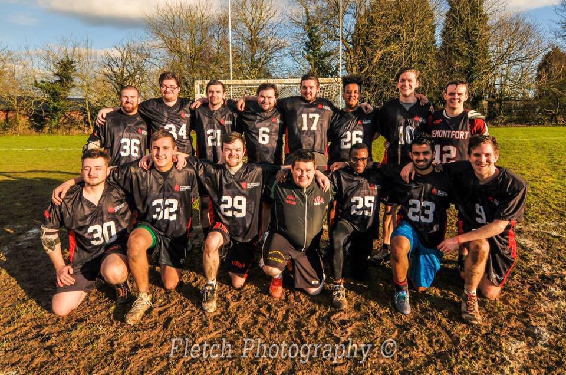
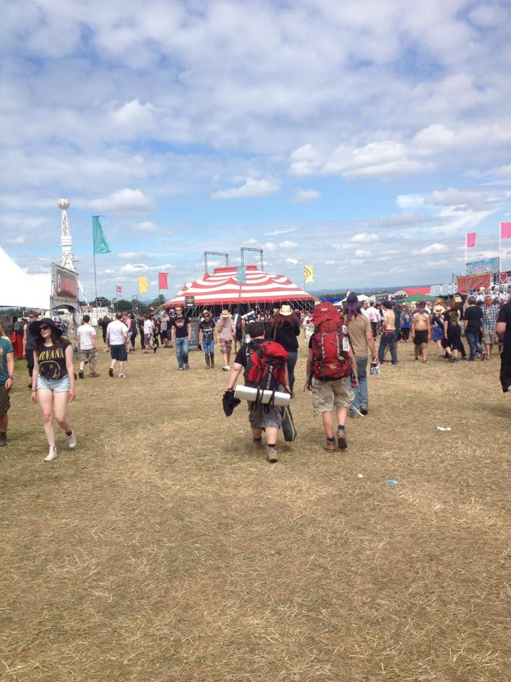
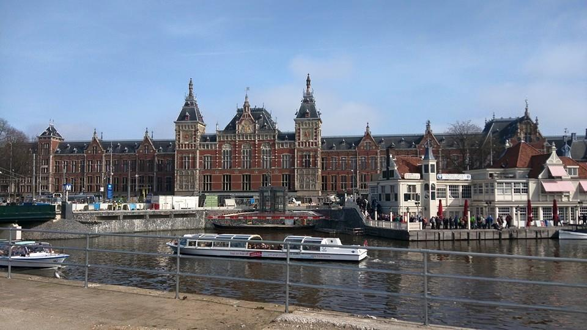
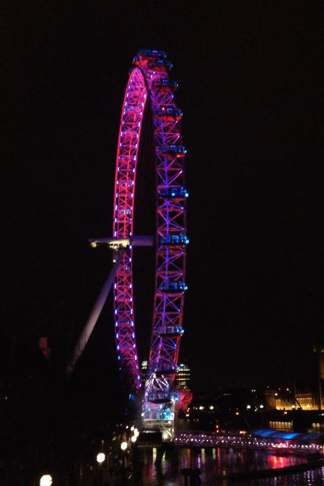
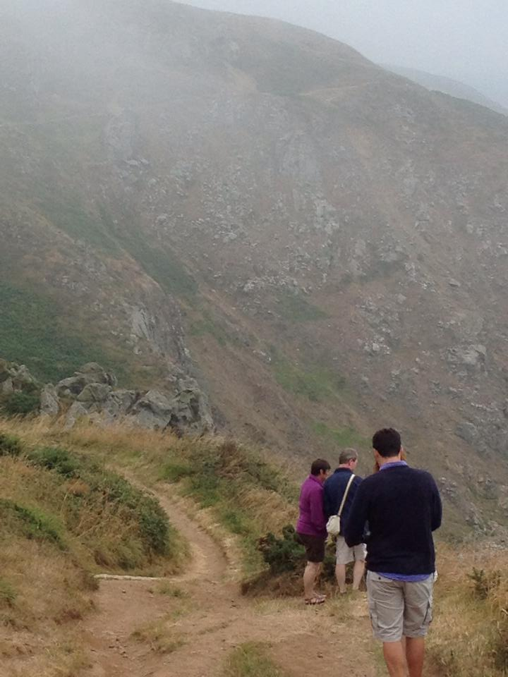
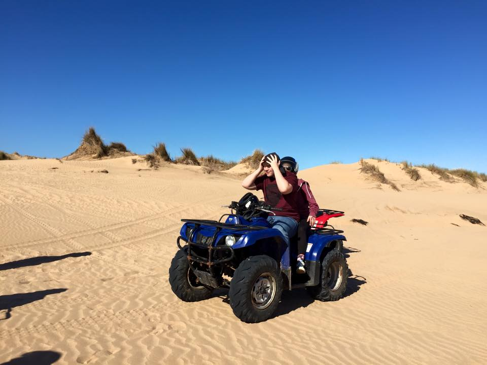

Saul Pountney
Scroll For More Infomation
I am currently a third year Computer Science student in the UK. I am nearing the completion of my acedemic studies and am looking for job role in the Security, Web Development and ICT Consulting sectors, to learn more Start Scrolling. Or if you want to get in touch about job opportunities Contact Me.
About Me
I am currently in my Third year of university studying for a BSc in Computer Science, I am a hardworking and motivated individual. I enjoy learning new skills and can easily adapt to new situations, working confidently and efficiently both independently and as part of a team.
Activities
I recently joined the De Montfort University Lacrosse team where I have learnt the value of working as part of a team. It has heightened my awareness of the importance of clear, concise communication because if you don't talk to the players around you, stratagems fail to work and people often lose focus.
Volenteer Work
Asthma UK – I have volunteered for Asthma UK for 7 years on a regular basis; helping to raise money by organising many vintage street stalls. Working in several different capacities, my responsibilities includes sorting stock, accounting for donations and manual labour has developed my confidence in working in a variety of roles, often simultaneously.
Social Networking
To find more infomation about my work and social activities please follow the links below. Especially try the GitHub link as it follows all my current work and minor Projects.
My CV - Details
To view and create a hard copy of the physical Resume please click Download.
Email: saulpountney@yahoo.co.uk
Address: Flat 14, Minster House, Northampton Street, LE1 1PA
Number: 07469713095
Qualifications
Robert Symth Acadamy
(Market Harborough) GCSE’s, September 2008 – June 2010
Grade:
English Literature: C
English Language: C
Maths: C
Science: B
Applied Science: B
ICT: Merit
Religious Studies: C
History: D
Media Studies: D
French: D
Product Design: D
South Leicester College
BTEC Extended Diploma, September 2012 – June 2014
Grade:
ICT: Distinction, Merit, Merit
De Motfort University
Computer Science BSc (Hons), September 2014 – Present
Grade:
See Graph Below
First Year - Completed
Second Year - Completed
Third Year - Week 22
These progress bars show the completion of my degree; as the weeks pass, the site shall be updated to show how far I have progressed. Once my degree is complete, a full list of the modules covered and an overall degree score will be uploaded.

”Fun loving team player, never gives up, always there when you need him.”
Declan Searson, De Montfort Third Year Student.

“Always hardworking and motivated, great worker and friend.”
Job Bogunovic, De Montfort Third Year Student.
Experiences
Below are some photos demonstrating some of the experiences I have enjoyed in the past three years. I believe they have all effected me in a positive way and culminate with me learning new abilities and real world experance.

DMU Lacrosse 2016-18
DMU Lacrosse
I have met many people over the years through playing with De Montfort University Lacrosse team at DMU, all of them different and unique. Through these experiences I have come to understand the importance of communication and the ability to adapt to difficult situations quickly. Thhe competitiveness in the sport and the people I play with all demand a high quility of commitment and player adaptability.
✕

Download 2014-17
Download
Download festival, like many other festivals has had a great impact on how I view others and the way people connect with each other. I have visited the last three fesitvals and I have grown to love the community and the people I meet there. Everyone is so welcoming and attenending these has given me a better understaning of how teamwork and companionship play a very big role in how people work together.
✕

Amsterdam 2014
Kokenhoff and history of Holland
Witnessing the cultivation of Holland's famous bulbs and the engineered way Holland has reclaimed much of its land from the sea demonstrated our power to shape the world we live in. As well as respecting and using the resources available responsibly to power industry.
✕

London 2014
London Lights
Many years ago I was lucky enough to witness the London Fireworks which welcome in the new year. This demonstrated to me the vast demographic range of Great Britain and the wide dispersion of our culture across the globe.
✕

France 2016
Hiking in France
I have enjoyed many group hikes around the countryside and coast of France. They have taught me the importance of resilience and that great effort reaps large rewards of beautiful scenery.
✕

Morrocco 2017
Morrocco
Exploring Moroccan cities exposed me to some of the large cultural differences and views across the world. I spent Christmas and New Year in a small walled city and this unique insight into other vastly different cultures taught me the values of understanding others views and the origins of these opinions.
✕